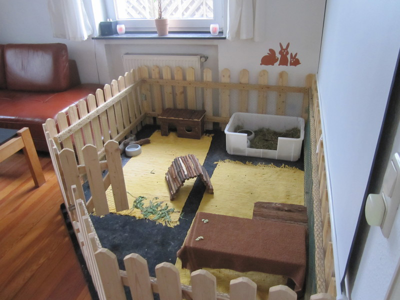

🥕Los conejos son animales pequeños por regla general, sin embargo, necesitan de un
espacio en donde puedan desenvolverse, ya que les encanta dar saltitos. Además,
estarás previniendo sobrepeso u obesidad, que sabemos son patologías perjudiciales
para su salud.
En primer lugar, debes garantizar espacio a tu Conejito, por lo que su jaula debe ser lo
más grande posible, con suficiente espacio para que se desplace, pueda ejercitarse y
estirarse. Es por ello que como mínimo, la base debe medir 4 veces el largo de un conejo
adulto.
En ella podrás colocar su bebedero y comedero y deberás destinar un espacio para que haga
sus necesidades en un esquinero o baño, por lo tanto, deberás educarlo para que siempre
las haga en ese espacio y la jaula no se ensucie mucho. Esto no es muy difícil ni requiere
tanta paciencia, pues como sabemos, son animales muy inteligentes. Pero para que esto sea
más fácil, prémialo cada vez que lo veas haciendo sus necesidades en el lugar correcto con
caricias o algún bocadillo de la fruta o snack que le guste más y verás que rápido aprende
la lección.
Es importante que la jaula de tu conejo tenga buena ventilación y a su vez sitio donde se
vea la actividad de la casa para que siempre se sienta acompañado, ya que si está demasiado
aislado puede sufrir aburrimiento y estrés. Si se queda solo muchas horas, puedes dejarle
música o programar el televisor para que se encienda algunas horas durante el día.🥕
